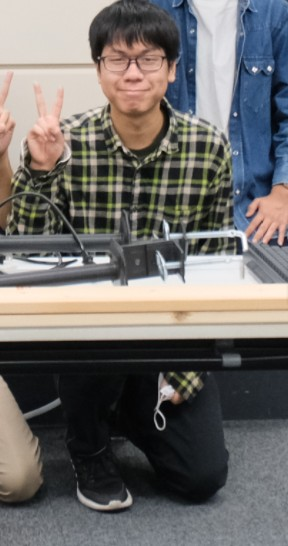

プロフィール
氏名：鎌田 泰栄
所属大学院：芝浦工業大学大学院
専攻：システム理工学専攻
研究室：実世界情報メカトロニクス研究室
研究：俯瞰情報と駆動力の機能モード統合を用いた協調搬送制御
所属サークル：デジクリ(18期会計)
趣味：ゲーム制作・音楽制作・ゲーム
中学時代
体を動かし、身を引き締めたいことからソフトテニス部に入部。そこではムードメーカー的存在を担い、テニスの応援でも多く応援を主導した。その結果、後輩、先輩分け隔てなく話せるようになる。


高校・大学時代
高校時代、プログラミングに初めて触れ、Hot Soup Proccessorを用いてプログラミングの基礎を身に着けプログラミングに興味を持つ。また、機械を動かすためにはプログラミングする力が必要だと知り、ハードとソフトの両方に精通したエンジニアに目指すことを決意する。しかし、大学受験では全力を出したのにも関わらず第一志望の国立大学に落ちてしまいショックを受ける、が持ち前の立ち直りの強さにより大学に入ったのだから全力で勉学と趣味に力を入れようと考える。大学ではデジタル創作サークルに入部し、ゲーム制作や音楽制作を行い、クリエイティブな側面も育むとともに、情報系の知識を手に入れる。。また、IoT機器なども個人で自作することにより電子工学の知識も身に着ける。また、勉学の面でも図書館で積極的に復讐することにより、好成績を残し、卒業式で表彰を受けた。